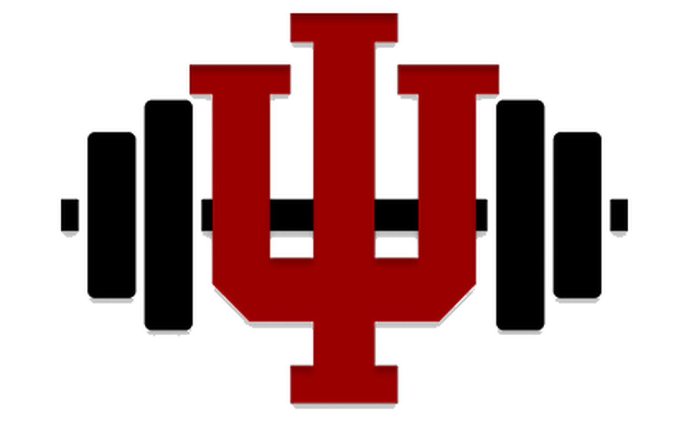
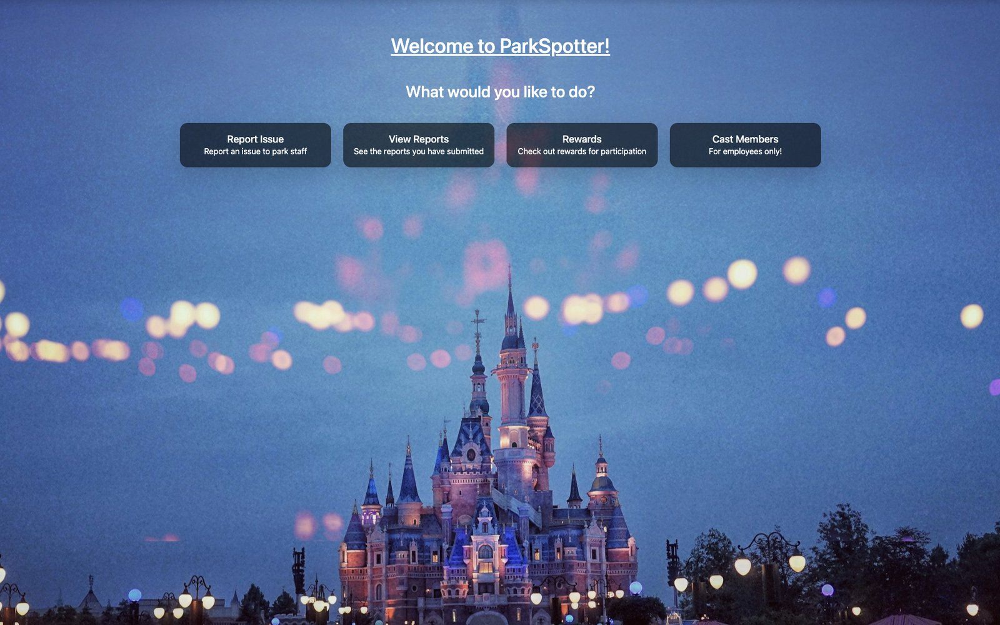
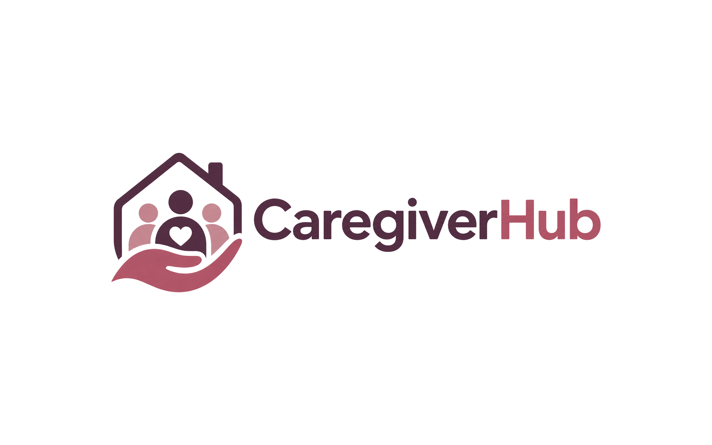

UX designer · Indianapolis
I design products that stay clear when the work is complex.
I’m Bryan Hope, a UX designer and HCI graduate student. I take ideas from rough sketch to tested Figma prototype — in IU studio courses and across three design internships.
Selected work
From concept to product

IU GymPal
A campus fitness companion for IU students, taken from paper sketches through four Figma versions and usability testing.
Read case study →
ParkSpotter
A live reporting tool so theme park guests can flag cleanliness and maintenance issues on a map — and staff can act before the experience falls apart.
Read case study →Data Dignity
A personal data hub for a teen with ADHD: see where data lives, who can see it, and take one two-minute action — without the alarm.
Read case study →
Caregiver Hub
A shared care board for families — today’s tasks, who is free, and who can see the record — instead of texts and sticky notes.
Read case study →Experience
Where I’ve designed
-
UI/UX Designer Intern
Cooledtured
UI and brand assets for a pop culture retail brand — website, social, marketing, and merchandise.
Sep 2026 – Present
-
Mobile UX Design Intern
Vaccine Genie
Flows, Figma prototypes, and a mobile design system for a digital health app on iOS and Android, refined through usability testing.
Jan – May 2026
-
UX/UI Design Intern
Altheros Capital
User flows, wireframes, and interactive Figma prototypes for a modern EHR application, built with design and development partners.
Sep – Dec 2025
About
I start with people, then I design the interface to support them.
I studied Informatics at Indiana University with minors in web design and human-centered computing. I’m now in the MS HCI program at IU Indianapolis, where I’m sharpening how I research, prototype, and test.
Outside the classroom, I’ve designed for an EHR startup, a mobile health app, and a pop culture retail brand.